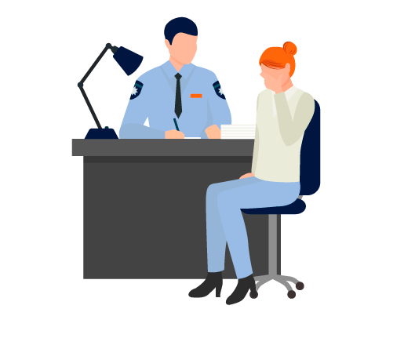

¿Cómo Denunciar?
¿Qué hacer ante un caso de Grooming?
Si tu hijo/a fue víctima de Grooming
- Realiza una contención y comprensión del menor.
- Que entienda que él o ella es la víctima, y no es su culpa.
- Resguardo de evidencia digital.
- No borre la información o las conversaciones.
- No reenvie chats, mensajes, imágenes o vídeos recibidos o enviados.
- No denuncie en la red social o aplicación la cuenta del acosador hasta haber realizado la denuncia.
- No bloquee la cuenta.
- No amenace o increpe al acosador.
- No se haga pasar por el menor.
- Haga capturas.
- Denuncie inmediatamente.

Denunciá
- Llamando al 102 (Provincia de Buenos Aires), 137 o al 0800 222 1717
- En el Ministerio Público Fiscal (CABA) al equipo Especializado en Delitos Informáticos:
Teléfono: 0800-333-472225 (FISCAL), Mail: denuncia@fiscales.gov.ar - En cualquier parte del país en la comisaria más cercana le indicarán donde debe acercarse para realizar la denuncia en cualquier parte del país.
- Al realizar la denuncia mencioná que es en el marco de la ley 26.904 -
Si necesitas asesoramiento podes contactarnos
Instituto de Políticas Públicas de Prevención de Grooming
(0221-427-1001 int. 1147/1528)
grooming@hcdiputados-ba.gov.ar
(0221-427-1001 int. 1147/1528)
grooming@hcdiputados-ba.gov.ar
ONG Mamá en Línea
(11-6463-5425)
mamaenlinea@gmail.com www.instagram.com/mama_en_linea https://twitter.com/mama_en_linea?lang=es www.facebook.com/PorLaLeyDeGrooming
(11-6463-5425)
mamaenlinea@gmail.com www.instagram.com/mama_en_linea https://twitter.com/mama_en_linea?lang=es www.facebook.com/PorLaLeyDeGrooming